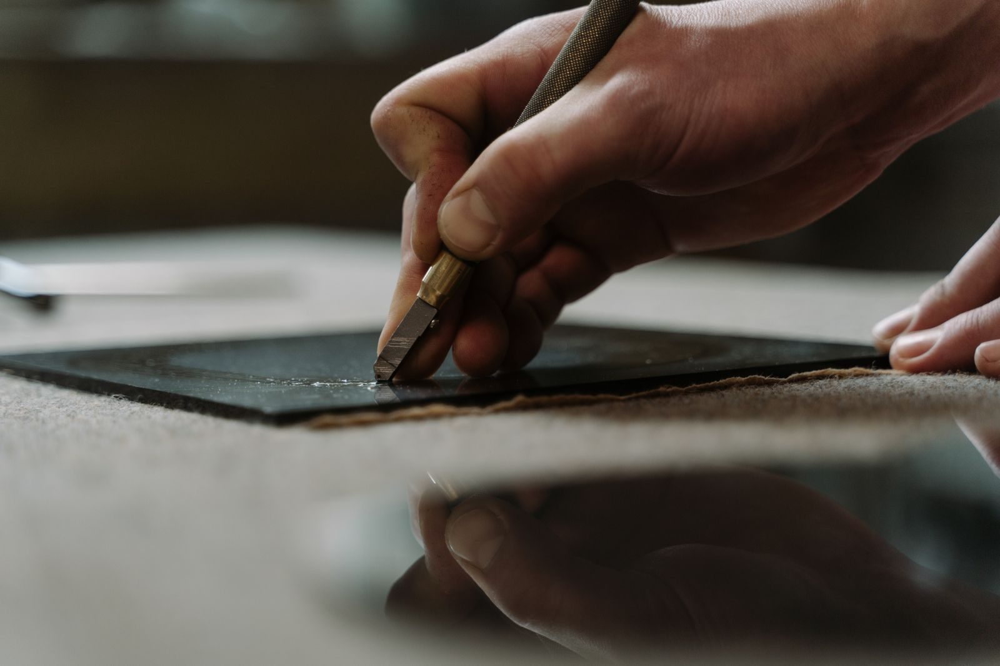

About
Glass is the only building material that is also weather.
I grew up in Bergen, at sixty degrees north, where in December the sun clears the mountains for about four hours and a south-facing window is a piece of household equipment as serious as the stove. I came to York in 2009 to learn architectural glass, served my apprenticeship years cutting, painting and leading other people's designs, and opened this studio in 2014 in a former joiner's shop — chosen because its north light is the light glass is judged by.
The studio is three people: me, a cutter-painter who fires a kiln better than anyone I have worked under, and a glazier who leads and installs. We make new work only. York is full of magnificent old glass and a small army of conservators who look after it — one of them has her workshop two streets from ours, and when a client brings us a broken medieval panel we send them to her, because restoration is a different honour and a different trade.
What I believe is simple enough to print: a window is architecture first and picture second. It has to weather, to be cleaned, to be insured, to be looked through on the worst day of February as well as the best day of June. Design that forgets that is just a painting with ambitions.

The working page
How a window runs.
Seven stages, three of them gates. At each gate the client approves something real — a drawing, a full-size cartoon, the actual glass — before money or glass is committed further. Nobody served by this studio has ever met their window for the first time on installation day.
1
Visit & survey
The opening is measured properly — old openings are never the size the drawings claim — the stone, frame and existing glass are checked, and the building's status (listed, conservation area, faculty jurisdiction) is established before any design is promised. First visit within 40 miles of York is free; beyond that, travel at cost.
2
Sketch design
A scale drawing and a short written statement of what the window is about — its subject, its light, its argument with the building. The design & cartoon fee (Table F1 on the Studio page) is payable at this gate and is credited in full if the commission proceeds within twelve months.
3
The cartoon
The design drawn at full size, every lead line in place. For churches, the cartoon is pinned in the building itself and left for a fortnight, so the people who will live with the window can argue with it while arguing is cheap. Revision at this gate costs nothing but time — 29 of the 60 cartoons in this studio's book were revised, and the book prints that without embarrassment.
4
Glass selection
The client stands at the light box in the studio and holds the actual sheets against the light. The glass schedule — type, colours, maker, price line — is signed by both sides. After this gate the glass is ordered and the price is fixed; nothing is substituted afterwards without a new signature.
5
Cutting & painting
Every piece cut to the cartoon, ground to fit, and painted where the design calls for it — grisaille trace and matt, silver stain for the yellows — and fired in the kiln. Paint on glass is not surface decoration; fired properly it is part of the glass and outlasts the lead around it.
6
Leading & cementing
Pieces are leaded in came, soldered at the joints, cemented for weather and rigidity, and cleaned. Mosaics are set in their cement bed on panels at this stage. Every panel is photographed against the light before it leaves the bench — the studio's own record, sent to the client with the invoice.
7
Installation
Panels are fitted into the surveyed opening on their ferramenta, tied to saddle bars where the span demands them, pointed and sealed. The opening is never left unglazed overnight. Old glass removed in the course of the work is recorded and returned to the client — it is theirs, not the studio's skip.
The honesty page
New means new.
No imitation age. The studio does not distress, antique or “age” new glass, and does not buy glass marketed as instant heritage. A new window in an old building is detailed to sit harmoniously at the distance of the room and to read as new work at arm's length — that legibility is a point of professional honour, not a failure of disguise.
The symbolism is the client's. Imagery, text and meaning are proposed by the studio and approved by the client at the cartoon gate — for churches, with the parish in the room. A window nobody has argued about is usually a window nobody cares about.
Substitution is never silent. If a glass is discontinued mid-project, work stops at that piece until the schedule is re-signed with its replacement — or the piece waits for the right sheet. The register on the Studio page prints the score: zero silent substitutions, ever.
What we decline. Copies of medieval windows; copies of living artists' windows from photographs; and any commission whose client wants the glass decided after the cartoon is approved. The first two are other people's work. The third is how windows go wrong.
Materials
The two glasses, in full.
Every client of this studio makes this choice at Gate 3, at a light box, holding both. This table is the same conversation, in print — including the studio's own bias, stated as one.
| Question | Mouth-blown antique | Machine-made cathedral |
|---|---|---|
| How it's made | Blown by mouth into a cylinder, cut open and flattened in the kiln — a sheet carries the breath and the swing of its making. | Rolled by machine from molten glass; texture pressed in evenly across the sheet. |
| Surface & colour | Seeds, striations and gentle unevenness. Colour deepens and pales across a single piece; a field of it is never flat. | Even texture, consistent colour from sheet to sheet. A field of it is calm and uniform. |
| Price (Table S2) | £385 / m² | £120 / m² |
| Lead time | Ordered per project from the glassworks; allow 6–10 weeks. | Held in stock in the studio's standard range; no wait. |
| Strength & lifespan | The same. Both are soda-lime glass of the same thickness, leaded, soldered and cemented identically, and both carry the studio's ten-year workmanship guarantee. Anyone who tells you mouth-blown lasts longer is selling you the dearer sheet. | |
| When it's right | A window looked at daily for decades, in a building that will outlive everyone at the signing — and whenever the light itself is the subject. | Family houses, tight budgets, large areas of even colour, and any project where the money honestly does more work elsewhere — as the Harrogate stair window in the case files shows. |
The studio's bias, stated: for a church window we recommend mouth-blown, knowing it is the more expensive line in our own table — because a parish will look at that glass for a century. For a stair window in a family house, machine-made is very often the honest buy. Both recommendations are given in writing at Gate 3, and the signature is the client's either way.
Engagement terms
The small print, at full size.
| Item | Terms |
|---|---|
| Design & cartoon fee | Table F1 (Studio page), by class. Credited in full against the commission if it proceeds within 12 months of Gate 1. |
| Deposit | One third of the fixed price at Gate 2 sign-off. Never more than a third, and never before the cartoon exists. |
| Second payment | One third at Gate 3, when the signed glass schedule is ordered. |
| Balance | On installation, against the bench photographs and the signed schedule. |
| Fixed price | Set at Gate 2 after survey. It moves only if the client changes the design or the glass afterwards — in writing, before the change is made. |
| Guarantee | Ten years on leading, soldering, cementing and fixing, with a five-year inspection included. Breakage and storm damage are excluded and are quoted for repair from the same printed tables. |
| Faculty & permissions | For churches, the parish petitions for faculty; drawings, statements and DAC correspondence support are included in the design fee. Listed-building and planning consents are the client's to obtain, with the studio's drawings supplied for the purpose. |
| Waitlist | Design work is booking for spring 2027. Installation slots follow cartoon approval, in the order cartoons are signed. |